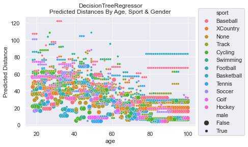
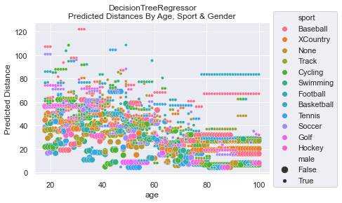

Regression - Distance Study#
In this study, we will use Machine Learning to create a model to predict the distance a person can throw a baseball.
Predicting Distance#
In this hypothetical example, we will use the data found in the Distance Case Study; please go to that page to view and learn more about the data. To summarize, the data provides a distance of how far a person can throw a baseball. The features include: age, gender, and sport.
Since we are predicting distance, a real number, we need to use a model that does Regression. Examine all the tabs below to see the Data, Code, the results of our two models, and graphs of the models’ predictions.
Summary#
The graphs presented in the Model Graphs tab are most insightful. It provide a lot of
information about how the model makes predictions. While MSE values help us to determine that the LinearRegressor
is better at making predictions, it is a far, far cry from providing real value.
Listing out the Coefficients and Feature Importance helps us understand what features are making the biggest impact on the predictions. But, again, the real value comes from the Model Graphs.
Please look at the Distance Case Study.
Here is a scatter plot of all the data and we can see it pretty messy. There are some patterns
one can extract, but very little is obvious.

Code to generate plot
sns.scatterplot(x=df['age'], y=df['distance'], hue=df['sport'], size=df['gender'])
plt.title('All Distance Data')
plt.legend(loc='upper left', bbox_to_anchor=(1.0, 1.1))
This is the code used to load the data, create the models, get the Coefficients, and show the Feature Importance percentages. This code is used in the Model Results tab.
def model_regression(features, labels, test_size=0.3, linear=True):
# Split the data into training and testing sets
train_f, test_f, train_l, test_l = train_test_split(features, labels, test_size=test_size)
# Initialize the Linear Regression model & train it
model = LinearRegression() if linear else DecisionTreeRegressor()
model.fit(train_f, train_l)
# Test the accuracy: Make predictions and show our MSE
label_predictions = model.predict(test_f)
print(f'MSE : {mean_squared_error(test_l, label_predictions):.2f}')
return model
def show_coefficients(model, features):
# Now, get the important of each feature
# Get the coefficients and feature names
coefficients = model.coef_
feature_names = features.columns
# Print the y-intercept
print(f'Intercept: {model.intercept_:.0f}')
# Print the coefficients and feature names
for f, c in zip(feature_names, coefficients):
print(f'{f} : {c:.3f}')
def show_importance(model, features):
# get importance
importance = model.feature_importances_
# summarize feature importance
for index, feat_importance in enumerate(importance):
print(f'Feature: {features.columns[index]}, Importance: {feat_importance:.2%}')
def load_data():
# data is not provided for the read. Sorry.
df = pd.read_csv('throwing_data.csv', index_col='id')
# gender is Male/Female strings.
# We need to either pd.get_dummies(), or alter gender to be True/False
df['male'] = df['gender'] == 'Male'
features = df[['male', 'sport', 'age']]
# sport is categorical data. We definitely need to get_dummies!
features = pd.get_dummies(features)
labels = df['distance']
return df, features, labels
Let’s look at the MSE (Mean Squared Error) for both the LinearRegressor and the
DecisionTreeRegressor. We see that LinearRegressor is much better on average with
an MSE = 274 while the DecisionTreeRegressor has MSE = 453.
We can see from the Coefficients determined in the LinearRegressor that the male gender throwing prediction is 17.7 farther. Those who play baseball are given 15.3 boost and those who do no sport at all are reduced by 6. For each year you age, you lose about 0.47.
The DecisionTreeRegressor reveals how important it thinks each feature is. The most
important to the model is age at 50%, then gender at 29%, followed by Baseball, None,
and Track dummy features.
The LinearRegressor is much more transparent in how it does its predictions. Approx:
\(dist = 54 + 17*male - 0.46*age + 15*Baseball + 4.9*Football - 6*None - ...\)
OUTPUT
LinearRegression Info
MSE : 273.95
Intercept: 54
male : 17.787
age : -0.466
sport_Baseball : 15.329
sport_Basketball : -0.119
sport_Cycling : -1.767
sport_Football : 4.918
sport_Golf : -1.514
sport_Hockey : 0.182
sport_None : -6.140
sport_Soccer : -2.176
sport_Swimming : -3.630
sport_Tennis : -1.729
sport_Track : -1.290
sport_XCountry : -2.064DecisionTreeRegressor Info
MSE : 452.93
Feature: male, Importance: 28.59%
Feature: age, Importance: 50.04%
Feature: sport_Baseball, Importance: 4.48%
Feature: sport_Basketball, Importance: 1.27%
Feature: sport_Cycling, Importance: 1.05%
Feature: sport_Football, Importance: 0.71%
Feature: sport_Golf, Importance: 1.00%
Feature: sport_Hockey, Importance: 0.21%
Feature: sport_None, Importance: 3.28%
Feature: sport_Soccer, Importance: 1.60%
Feature: sport_Swimming, Importance: 1.86%
Feature: sport_Tennis, Importance: 1.83%
Feature: sport_Track, Importance: 2.27%
Feature: sport_XCountry, Importance: 1.83%
Code used
df, features, labels = load_data()
print('LinearRegression Info')
model = model_regression(features, labels, linear=True)
show_coefficients(model, features)
print('\nDecisionTreeRegressor Info')
dtm = model_regression(features, labels, linear=False)
show_importance(dtm, features)
To get an truly insightful understanding of how a model is make its predictions, it is handy to make a graph of the predictions from the features. For example, below you’ll see how the LinearRegressor predicts that women who play baseball can throw farther than men who do no sports at all.
To generate these graphs, we had to create a DataFrame with all possible combinations
of the features and then do a prediction. The predictions are graphed here:
 

NOTE: The DecisionTreeRegressor was not bounded when learning. The complexity of the predictions could have been simplified and, perhaps, the MSE could have been reduced if we had optimized max_depth via hyperparameter tuning. For simplicity, we did not do this. Having the complexity also helps establish that the model output was quite complicated and likely represented some over fitting.
Code to create graphs
def create_all_features():
# lets create a set of data to make predictions on
# get all ages for each sport and gender
sports = df['sport'].unique()
ages = [ age for age in range(18, 101) ]
genders = [False] * (len(ages)*len(sports))
gender_m = [True] * len(genders)
genders.extend(gender_m)
# replicate ages to be for all sports (multiply by number of sports)
# then, double itself to get both genders
all_ages = []
for i in range(len(sports)):
all_ages.extend(ages)
all_ages.extend(all_ages)
# replicate sports to be for all ages (multiply by number of ages)
# then, double itself to get both genders
all_sports = []
for i in range(len(ages)):
all_sports.extend(sports)
all_sports.extend(all_sports)
# create the dataframe structured like original features during training
df_features = pd.DataFrame({'male':genders, 'age':all_ages, 'sport':all_sports})
return df_features
def graph_linear_predictions(features):
# View the predictions made by LinearRegressor
# make some predictions and graph them!
# sport is categorical data. We definitely need to get_dummies!
df_dummified_features = pd.get_dummies(features)
label_predictions = model.predict(df_dummified_features)
sns.lineplot(x=features['age'], y=label_predictions, hue=features['sport'], style=features['male'])
plt.title('LinearRegressor\nPredicted Distances By Age, Sport & Gender')
plt.legend(loc='upper left', bbox_to_anchor=(1.0, 1.1))
plt.ylabel('Predicted Distance')
def graph_dtr_predictions(features):
# View the predictions made by DecisionTreeRegressor
# make some predictions and graph them!
# sport is categorical data. We definitely need to get_dummies!
df_dummified_features = pd.get_dummies(features)
label_predictions = dtm.predict(df_dummified_features)
sns.scatterplot(x=features['age'], y=label_predictions, hue=features['sport'], size=features['male'])
plt.title('DecisionTreeRegressor\nPredicted Distances By Age, Sport & Gender')
plt.legend(loc='upper left', bbox_to_anchor=(1.0, 1.1))
plt.ylabel('Predicted Distance')